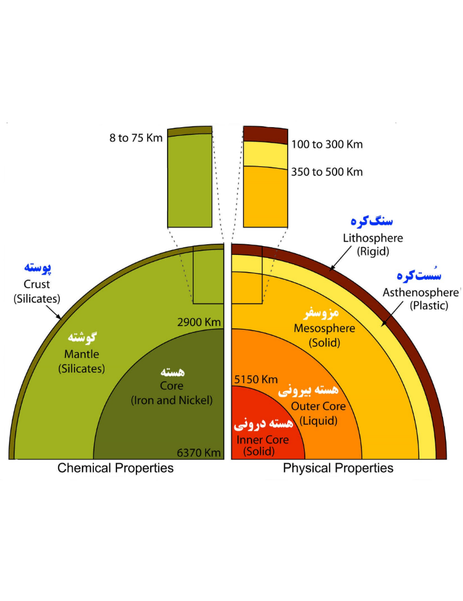

بازگشت
بازگشت

لایهبندی کره زمین
لایهبندی کره زمین براساس ترکیبات شیمیایی، شامل پوسته، گوشته و هسته است.
براساس خصوصیات فیزیکی، کره زمین متشکل است از: سنگکره، سُستکره، مِزوسفِر (گوشته پایینی)، هسته بیرونی و هسته درونی.
از بین لایههای مختلف زمین، سُستکره به صورت خمیریشکل و هسته بیرونی به صورت مایع است در حالی که سایر لایهها جامد هستند. سنگکره شامل پوسته و لایهای از بخش بالایی گوشته است. سُستکره در زیر سنگکره قرار دارد و شامل بخش بالایی گوشته است. بخش پایینی گوشته، مِزوسفِر نام دارد.
به طور میانگین، شعاع کره زمین حدود ۶۳۷۰ کیلومتر است اگر چه در نواحی دو قطب شمال و جنوب حدود ۱۰ کیلومتر کمتر و در محدوده خط استوا حدود ۱۰ کیلومتر بیشتر است.
شناسایی ساختار درونی زمین از طریق اطلاعات ثبت شده توسط لرزهنگارهای واقع در مناطق مختلف کره زمین میسر شده است زیرا که امواج لرزهای ثبت شده از زمینلرزهها تحت تاثیر خصوصیات مسیر انتشار خود در زمین هستند.